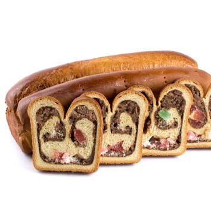

Cozonac
Cozonac is a traditional sweet bread that dates back to ancient Egypt. It was later influenced by the Greeks and Romans untill it eventually became a staple in Southeastern Europe. It is most popular in countries such as Romania, Moldova, and Bulgaria. This desert is especially prevalent in Christian holdiays such as Christmas and Easter and is a staple of these holidays in the countries listed above.
- Ingredients
- 1kg of flour
- 200g of sugar
- yeast
- 500-600ml warm milk
- 5-6 egg yolks
- 100ml of butter
- 100ml of oil
- Walnuts
- 1tb Salt

Bread Instructions
- You combine the yeast with 1 spoon of sugar and 2 spoons of flour.
- You whisk the egg yolks and mix in 1 table spoon of salt.
- Mix sugar with warm milk.
Filling Instructions
- You whisk egg yolks and add sugar.
- You crush the wlanuts untill all pieces are roughly as small as a 1mm cube.

Baking Instructions
Once all thoes instructions are complete bake at 170 dgrees Celcius for around 50 minutes, or untill the top has risen out of the pan with a dark chocolate brown on top.
| # | Type | Image | About |
|---|---|---|---|
| 1 | Walnut Filling |  |
The more traditional way of making Cozonac. |
| 2 | Rahat (Turkish Delight) Filling |  |
A more modern and Turkish / Greek way of making Cozonac. |
| 3 | Walnut and Rahat Filling |  | A mix between both ways of making Cozonac. |